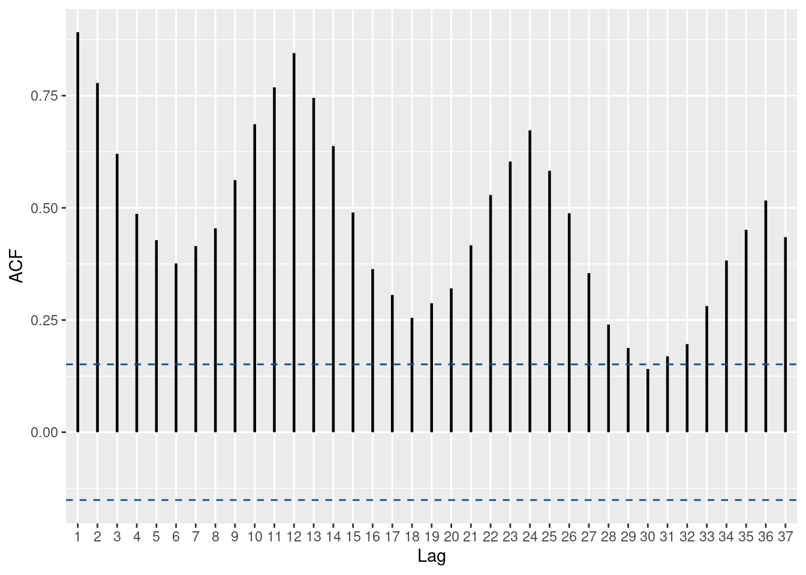
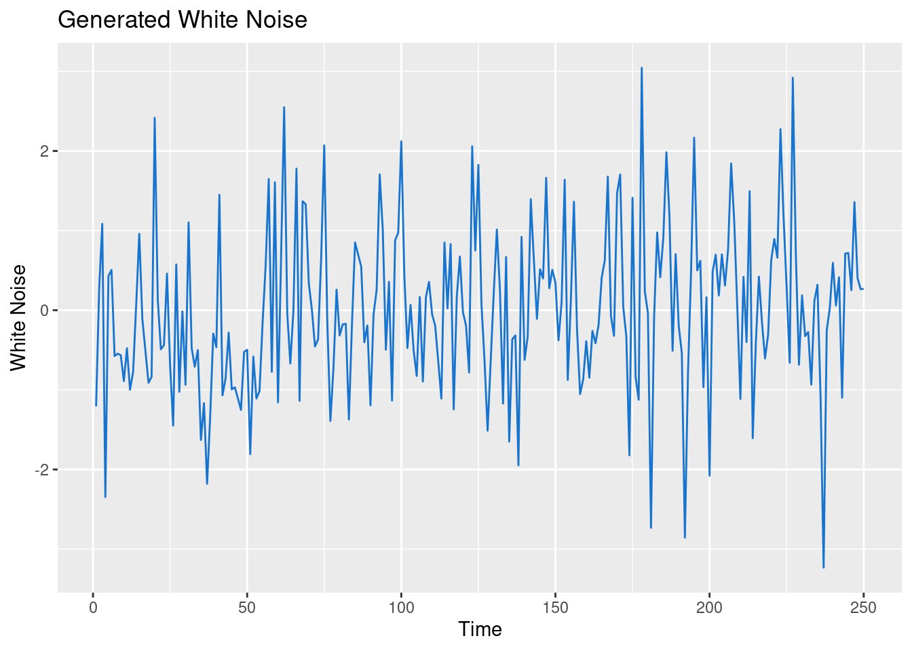
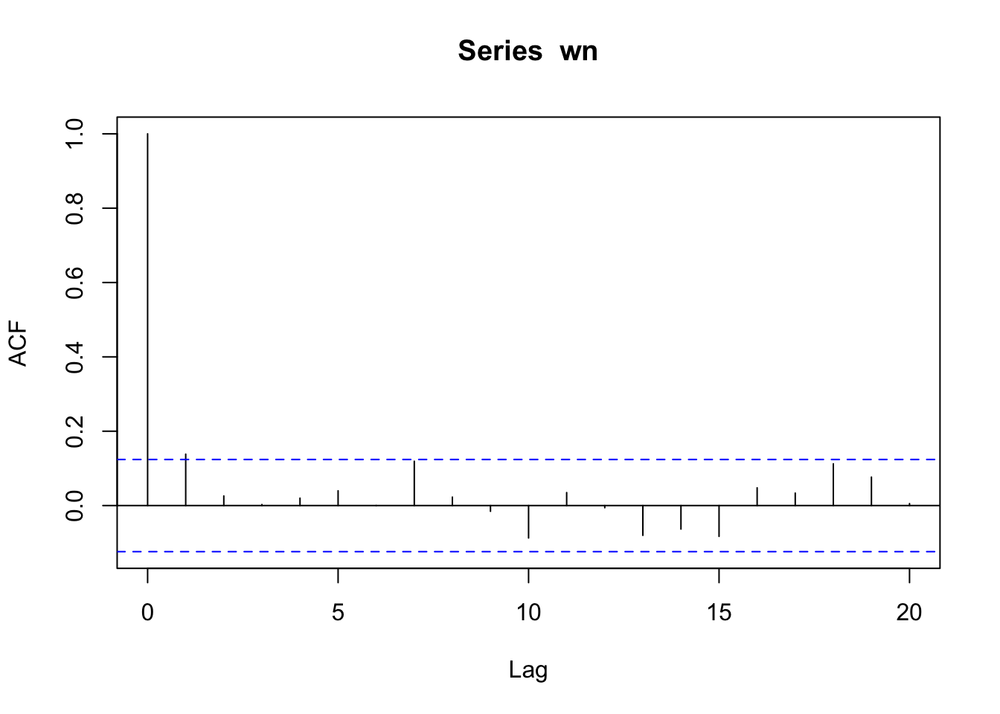
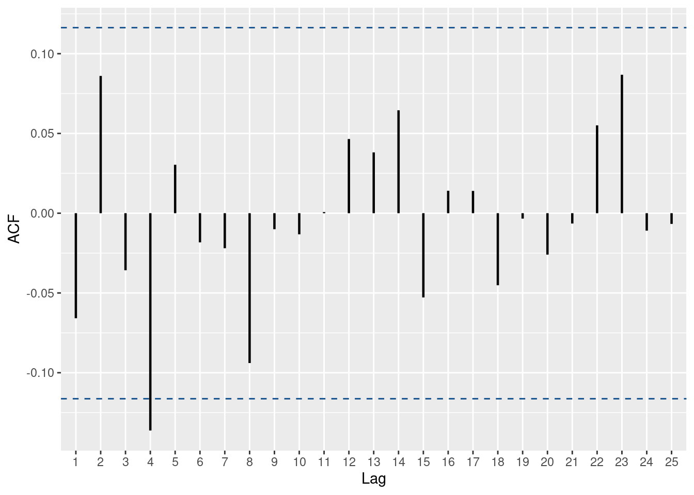

library(readr)
library(tibble)
library(ggplot2)
milk <- read_csv('../../../raw_data/milk.csv')
ggplot(milk, aes(x = month, y = milk_prod_per_cow_kg)) +
geom_line()This post is to set up the basic concepts of time-series analysis.
Autocovariance & autocorrelation
Autocorrelation as the name indicates is the correlation of the time-series with itself, more specifically with a lag version of itself. We can think of it as many different coefficient of correlations. One for each lag. \(r_2\) measure the correlation between the time series at time \(t\) and time \(t - 2\). Similarly, \(r_k\) measure the correlation between the time series at time \(t\) and time \(t - k\)
\[r_k = \frac{\sum_{t=k+1}^T \left( y_t - \bar{y}\right) \left(y_{t-k} - \bar{y} \right)}{\sum_{t=1}^T \left(y_t - \bar{y} \right)^2}\]
More genrally, let’s consider \(\{X_t\}\) a time series.
- Then the mean function of \(\{X_t\}\) (the first moment) is defined as \(\mu_t = \textbf{E}(X_t)\). In other words, \(\mu_t\) is the expected value of the time series at point t.
- The Variance of the time series is defined as \(\sigma_t ^2 = Var(X_t) = \textbf{E}[(X_t - \mu_t)^2]\).
- In general, \(\mu_t\) and \(\sigma_t ^2\) are different at different point in time.
Now, we define the autocovariance function of the time series as \[\gamma(s, t) = Cov(X_s, X_t) = \textbf{E}[(X_s - \mu_s)(X_t - \mu_t)]\]
In the same vein, we define the autocorrelation function of the time series as \[\rho(s,t) = Corr(X_s, X_t) = \frac {\gamma (s, t)}{\sigma_s \sigma_t} = \frac{Cov(X_s, X_t)}{\sqrt{Var(X_s) Var(X_t)}}\]
Autocovariance and autocorrelation measure the linear correlation between between two points \(X_s\) and \(X_t\) on the same time-series.
Few properties of autocovariance and autocorrelation of time-series
- \(\gamma(t, t) = \sigma_t^2\)
- \(\gamma(s, t) = \gamma(t, s)\)
- \(|\gamma(s, t)| \le \sigma_s \sigma_t\)
- \(\rho(t, t) \equiv 1\)
Autocorrelation plots - Correlogram
As exercise, we can plot the auto-correlation of a non-stationary (aka with significant autocorrelation) time-series. We are using the Monthly Milk production (no idea where the data come from)
On the autocorrelation plot, the threshold line are situated at \(\pm \frac{2}{\sqrt{T}}\) .
Let’s maybe first have a visual of the data.
Using R
In R the standard function to plot a correlogram is the acf() function
acf(milk$milk_prod_per_cow_kg)Graph clearly shows some seasonality (at the 12 lags ==> yearly correlation) which indicates that our data are non-stationary (next section). The threshold line is at 0.154 as there are 168 observations in the dataset (number of monthly reported observations)
If we are more attached to the auto-correlation values, we can store the results in a dataframe.
yo <- acf(milk$milk_prod_per_cow_kg, plot = F)
yo
Autocorrelations of series 'milk$milk_prod_per_cow_kg', by lag
0 1 2 3 4 5 6 7 8 9 10 11 12
1.000 0.892 0.778 0.620 0.487 0.428 0.376 0.415 0.454 0.562 0.687 0.769 0.845
13 14 15 16 17 18 19 20 21 22
0.745 0.638 0.490 0.364 0.306 0.255 0.287 0.321 0.417 0.529 We could use the ggplot package to create a function to draw acf and get more customization. We will re-use this function later as well.
# slightly fancier version (with more customization)
ggacf <- function(series) {
significance_level <- qnorm((1 + 0.95)/2)/sqrt(sum(!is.na(series)))
a <- acf(series, plot=F)
a.2 <- with(a, data.frame(lag, acf))
g <- ggplot(a.2[-1,], aes(x=lag,y=acf)) +
geom_segment(mapping = aes(xend = lag, yend = 0), linewidth = 0.8) +
xlab('Lag') + ylab('ACF') +
geom_hline(yintercept=c(significance_level,-significance_level), linetype= 'dashed', color = 'dodgerblue4');
# fix scale for integer lags
if (all(a.2$lag%%1 == 0)) {
g<- g + scale_x_discrete(limits = factor(seq(1, max(a.2$lag))));
}
return(g);
}ggacf(milk$milk_prod_per_cow_kg)
Using Python
In python, we need to use the statsmodel package.
from pandas import read_csv
import matplotlib.pyplot as plt
from statsmodels.graphics.tsaplots import plot_acf
df = read_csv('../../../raw_data/milk.csv', index_col=0)
plot_acf(df)
plt.show()Stationarity
A time-series \(\{X_t\}\) is (weakly) stationary if:
- \(E[X_t] = \mu\) is a constant
- \(E[X_t^2] < \infty\)
- \(Cov(X_t, X_{t+k}) = \gamma(k)\) is independent of t for each integer k. \(\gamma(k)\) is called the lag \(k\) autocovariance of function of \(\{X_t\}\)
Random Walk & White Noise
White noise is a special type of time-series and a special case of stationarity. The concept emerge when studying Random Walk. \(\{X_t\}\) is a random-walk if it satisfies the equation:
\[X_t = X_{t-1} + W_t \tag{1}\] where \(\{W_t\}\) is a white-noise. In other words, \(W_t \sim iid N(0, \sigma_w^2)\)
\(\{W_t\}\) is a white-noise if
- \(E[W_t] = \mu\) is a constant for all t
- \(Var[W_t] = \sigma_w^2\) is a constant
- \(Cov(W_s, W_t) = 0\) for any s and t with \(s<t\). In other words, any 2 subset of W are uncorrelated.
If \(\{W_t\}\) is iid (independent and identically distributed) and \(\rho(k) = 1\) (when k=0) and \(\rho(k) = 0\) (otherwise, aka for any other values of k), then \(\{W_t\}\) is a white noise.
Therefore, as \(n \rightarrow \infty\), we can say that \(\frac{1}{n} (X_1 + \dots + X_n) = E[X_t] = \mu\)
A random walk is mean stationary: \(E(X_t) = E(X_0)\). However, the random walk is NOT variance stationary: \(Var(X_t) = Var(X_{t-1}) + \sigma_w^2 \gt Var(X_{t-1})\).
We can generate white-noise in R using the arima.sim() function.
set.seed(1234)
# Generate a white noise in R
wn <- stats::arima.sim(model = list(order = c(0, 0, 0)), n = 250)
df <- tibble(x = 1:250, y = as.vector(wn))
ggplot(df, aes(x, y)) +
geom_line(color = 'dodgerblue3') +
xlab('Time') + ylab('White Noise') +
labs(title = 'Generated White Noise')And let’s check the autocorrelation plot to visually confirm that.
# using the standard R function.
acf(wn, lag.max = 20)
We could also use a ggplot function to plot the auto-correlation of our time-series.
ggacf(wn)
Statistical test to check white-noise.
In R we can use the Ljung-Box test (Portmanteau ‘Q’ test).
Box.test(wn, type = 'Ljung-Box', lag = 1)
Box-Ljung test
data: wn
X-squared = 4.8374, df = 1, p-value = 0.02785PACF
The Partial Autocorrelation measures the correlation between \(\{X_{t-k} \}\) and \(\{ X_t \}\).
pacf(milk$milk_prod_per_cow_kg)Application to a financial asset
We know that most financial assets prices are not stationary. Let’s take SBUX for instance. That being said, the log difference of their prices is stationary. Note how \(log(P_t) - log(P{t-1}) = log( \frac{P_t}{P_{t-1} )\)
Using R
library(dplyr)
library(lubridate)
df <- read_csv('../../../raw_data/SBUX.csv') |> arrange(date) |>
select(date, adjClose) |>
mutate(ret_1d = log(adjClose / lag(adjClose)),
ret_5d = log(adjClose / lag(adjClose, n = 5)),
y_t = log(adjClose) - log(lag(adjClose)),
day_of_week = weekdays(date)) |>
filter(date > '2018-01-01' & day_of_week == 'Tuesday')
ggacf(df$y_t)
Python code
from statsmodels.tsa.stattools import acf
from statsmodels.stats.diagnostic import acorr_ljungbox
from statsmodels.graphics.tsaplots import plot_acf, plot_pacf
import pandas as pd
import numpy as np
import matplotlib.pyplot as plt
py_df = pd.read_csv('../../../raw_data/SBUX.csv')
py_df.index = py_df['date']
py_df = py_df.sort_index()
py_df_ts = pd.Series(py_df['adjClose'])
log_ret = np.log(1 + py_df_ts.pct_change())
log_ret = log_ret.dropna()
r, q, p = acf(log_ret, nlags = 25, qstat = True)
fig = plt.figure()
plot_acf(log_ret, lags=25)
plt.show()
# q is for the Ljung-Box test statistics
qarray([26.3136516 , 26.316042 , 26.4475469 , 27.2734633 , 28.00235211,
28.69472715, 28.70545674, 35.25084316, 39.48634821, 39.62923899,
40.19059746, 40.26948906, 40.2707996 , 40.27868851, 44.51737182,
44.57802557, 45.63422739, 45.70863764, 46.1791967 , 46.4744188 ,
47.53325326, 48.52664511, 49.81175008, 50.99884363, 54.25246436])# p is for the p-value of the Ljung-Box statistics.
parray([2.90229916e-07, 1.92994124e-06, 7.68595886e-06, 1.75019647e-05,
3.63602517e-05, 6.94858936e-05, 1.63715557e-04, 2.40667022e-05,
9.41189824e-06, 1.96904817e-05, 3.31867363e-05, 6.48649190e-05,
1.25022094e-04, 2.30799458e-04, 9.12196699e-05, 1.61044765e-04,
1.95803242e-04, 3.27130628e-04, 4.67495545e-04, 6.93532977e-04,
7.95682642e-04, 9.24023511e-04, 9.75159499e-04, 1.05482880e-03,
6.16160760e-04])q1, p1 = acorr_ljungbox(log_ret, lags =25, return_df = False, boxpierce = False)
p1'lb_pvalue'fig = plt.figure()
plot_pacf(log_ret, lags=25)
plt.show()
log_ret.describe()count 5653.000000
mean 0.000559
std 0.019890
min -0.176788
25% -0.008773
50% 0.000345
75% 0.009802
max 0.168728
Name: adjClose, dtype: float64log_ret.plot()
plt.show()pd.Series.idxmax(log_ret)'2009-07-22'pd.Series.idxmin(log_ret)'2020-03-16'